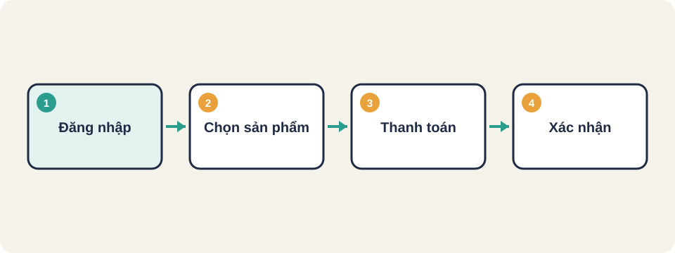
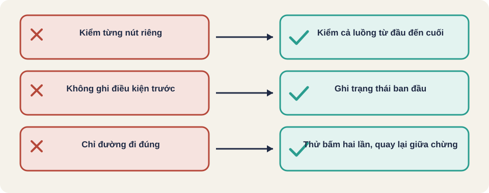

Hình vẽ gốc, dùng để minh họa thứ tự các bước chính của bài.
Kiểm thử trang web từ góc nhìn người dùng: đi qua một luồng hoàn chỉnh trên trình duyệt thật, không chỉ gọi hàm.

Hình vẽ gốc, dùng để minh họa thứ tự các bước chính của bài.
Một luồng là chuỗi việc người dùng làm để đạt một mục tiêu, ví dụ: mở trang, đăng nhập, thêm sản phẩm vào giỏ, thanh toán. Kiểm thử luồng quan trọng hơn kiểm từng nút riêng lẻ.
1. Mở /dang-nhap
2. Nhập email hợp lệ, mật khẩu đúng
3. Bấm "Đăng nhập"
Kỳ vọng: chuyển sang trang chủ, hiện tên người dùngCông cụ tự động như Playwright hoặc Selenium mở trình duyệt, điền form, bấm nút và kiểm nội dung trên màn hình. Mỗi ca nên chạy trên ít nhất hai trình duyệt.
| Tầng | Kiểm gì | Ví dụ |
|---|---|---|
| Giao diện | Nút, thông báo, chuyển trang | Bấm Thanh toán thì hiện trang xác nhận |
| Dữ liệu | Bản ghi đơn hàng được tạo đúng | Đơn có đúng tổng tiền và trạng thái |
| Tích hợp | Dịch vụ thanh toán nhận yêu cầu | Giao dịch thử được ghi nhận |
| Ngoài hệ thống | Email xác nhận đã gửi | Hộp thư nhận được email trong 1 phút |
Kiến thức chung, chưa đối chiếu nguồn gốc.
Kịch bản: Mua hàng bằng thẻ thử
Dữ liệu: tài khoản test01, sản phẩm A giá 100.000 đ
1. Đăng nhập test01
2. Thêm sản phẩm A vào giỏ
3. Kiểm: giỏ có 1 sản phẩm, tổng 100.000 đ
4. Thanh toán bằng thẻ thử
5. Kiểm: trang "Đặt hàng thành công" hiện mã đơn
6. Kiểm: đơn có trạng thái "Đã thanh toán"Kiến thức chung, chưa đối chiếu nguồn gốc.
Luồng để lại đơn hàng và tài khoản. Mỗi lần chạy nên dùng dữ liệu riêng hoặc dọn sau khi xong, để ca sau không bị lẫn dữ liệu.
Kiến thức chung, chưa đối chiếu nguồn gốc.

Thuật ngữ trong slide này: Điều kiện trước (precondition): Trạng thái cần có trước khi bắt đầu một ca. Nếu không đúng, ca không có ý nghĩa.
Luồng người dùng (user flow)
Điều kiện trước (precondition)
Locator (bộ định vị)
Thuật ngữ trong slide này: Luồng người dùng (user flow): Chuỗi việc người dùng làm để đạt mục tiêu, từ bước đầu đến lúc xong. · Điều kiện trước (precondition): Trạng thái cần có trước khi bắt đầu một ca. Nếu không đúng, ca không có ý nghĩa.
Mỗi bước trong luồng cần một kiểm tra riêng. Nếu bước nào sai thì dừng và ghi lại đúng bước đó.
Thuật ngữ trong slide này: Điều kiện trước (precondition): Trạng thái cần có trước khi bắt đầu một ca. Nếu không đúng, ca không có ý nghĩa.
Khi mỗi bước của luồng đăng nhập, thanh toán nằm trong một lớp trang riêng, luồng test đọc như mô tả nghiệp vụ. Nếu giao diện đổi, chỉ sửa lớp trang.
Nguồn: Martin Fowler, Page Object [đã đọc].
Nguồn: github.com/PaulWaltersDev/FreeLearningResourcesForSoftwareTesters, mục "Mục mở rộng (liên quan Test Automation)". Tìm tên tài liệu trong repo để lấy liên kết.
Thuật ngữ trong slide này: Luồng người dùng (user flow): Chuỗi việc người dùng làm để đạt mục tiêu, từ bước đầu đến lúc xong.